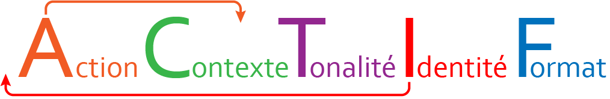

C'est quoi un prompt ?
Si vous avez déjà interagi avec un ordinateur en tapant du texte au clavier, félicitations, vous avez
"prompter" !
Loin d'être une insulte, le “prompt” est un mot tiré du domaine informatique qui désigne l’invite de
commande
envoyée à un système. La formulation de ce prompt, aussi appelée “requête” en français,
conditionne la réponse fournie par l'IA. Plus les instructions données dans le prompt
sont précises et complètes, plus les suggestions et idées fournies seront pertinentes.
Oubliez la simple demande commençant par "fais moi...", "dis moi..." etc. Il existe de nombreuses méthodes
pour
prompter efficacement et toutes incluent des protocoles éprouvés comme le zero-shot, few-shot,
chain-of-thought... Ne nous embêtons pas avec des termes techniques complexes, sachez simplement que ces
protocoles visent à conduire l'IA vers des réponses plus précises et contextuelles.
De toutes les techniques existantes (CQQCOQP, RISPO...), j'en ai retenu deux. Il me semble que sur le plan
pédagogique, ce sont celles qui donnent les meilleurs résultats toutes IA confondues. Évidemment, chacun y
verra l'opportunité de tester et éprouver ses approches préférées.
1. La méthode ACTIF
La méthode ACTIF est un modèle simple et efficace permettant l'obtention d'une réponse claire. Elle est rapide, structurée et pédagogique. On la retient sous l'acronyme ACTIF mais on voit clairement grâce aux flèches que l'acronyme ICATF serait plus logique et moins facile à retenir.

Par exemple :
I : Agis en tant que professeur de mathématiques/physique-chimie en CAP.
C : Tu as en charge des élèves de la filière CAP logistique et transport. Le thème du chapitre est centré sur les pourcentages et plus précisément le calcul d'une réduction commerciale.
A : Rédige l'énoncé d'un exercice d'application contextualisé à la filière en deux étapes : "Calcul de réduction" et "calcul du prix soldé". Le prix initial est fixé et l'article est soldé avec une remise indiquée dans l'énoncé. La question finale doit être exactement : "Le vendeur applique une remise supplémentaire de 5% sur le prix soldé. Quel est le prix final que paiera le client ?" en la plaçant entre guillemets.
T : Le ton doit être académique.
F : Fournis l'énoncé de l'exercice suivi d'une section "corrigé" détaillé.
Remarque :
Notez que la couleur des éléments n'a pas d'importance puisque les IA traitent les prompts en texte brut.
Pour ce qui est de l'ordre, les choses sont plus nuancées. En effet, une IA ne "lit pas dans l'ordre" comme
un
humain. Elle traite l'ensemble du prompt comme un bloc transformé en token. Tout est pris en compte. MAIS
:
si sur des prompts très simples, l'ordre des éléments n'est pas fondamental, pour les prompts plus
complexes
en
revanche... Il faut être vigilant.
Le début du prompt est une zone stratégique (Ces
informations pourraient avoir plus de poids), on fixe le cadre initial en définissant le contexte, les
objectifs,etc, qui vont influencer toute la réponse dès le départ. Si la contrainte arrive à la fin, elle
peut
être moins bien respectée ou la réponse moins claire.
Exemple volontairement simpliste en informatique :
-
Prompt A
- Fais une page HTML animée
- Sans Javascript
-
Prompt B
- Sans Javascript
- Fais une page HTML animée
Le prompt B respecte presque toujours mieux la contrainte parce que celle-ci devient structurante au lieu d'être corrective.
En conclusion : L'ordre des éléments du prompt ne constitue pas une règle absolue, ce n'est pas un "coefficient de priorité technique" mais dans la pratique, l'ordre influence la qualité et la cohérence.
2. La méthode CAFÉ
La méthode CAFÉ est orientée vers la précision et la qualité de sortie. L'ajout d'exemples en est largement
responsable.
Il suffit de suivre ces 4 étapes pour structurer le prompt :
Fournir un cadre clair pour orienter la réponse de l'IA.
- Décrire la situation ou le rôle attendu.
- Préciser le domaine ou l'objectif général.
- Ajouter des précisions pour éviter les ambiguïtés.
Indiquer l'action attendue
- Utiliser des verbes d'action clairs pour guider la réponse.
- Nommer le public cible pour ajuster le ton et le vocabulaire.
Définir clairement les paramètres de la production attendue. Indiquer par exemple :
- Le nombre de mots,
- Le type de document,
- la structure,
- le format numérique (markdown, python...),
- le style.
Réitérer pour affiner ou clarifier la réponse de l'IA.
- Demander des explications.
- Vérifier les faits et demander des sources pour valider
- Exprimer des doutes ou proposer des alternatives pour enrichir.
Par exemple :
C : Tu es enseignant de français, expert en analyse littéraire pour des élèves de 6e. Ton rôle est de m'aider à concevoir une activité interactive sur l'analyse des personnages dans Le Petit Prince.
A : Crée une activité de groupe de 30 minutes où les élèves débattent des choix et de l'évolution des personnages. Intègre une réflexion individuelle où chaque élève écrit une courte analyse sur un personnage de leur choix. Ajoute des idées d'évaluation pour mesurer la compréhension des personnages et les compétences de rédaction et de communication.
F : Structure l'activité en trois phases. Structure, débat de groupe et évaluation individuelle. Présente les instructions sous forme de liste numérotée. Ajoute un format d'évaluation pour chaque phase.
É : Fournis d'abord une proposition initiale. Je te demanderai ensuite d'ajuster ou d'améliorer certains éléments si besoin, comme les critères d'évaluation pour la réflexion individuelle par exemple.
Mon but étant de proposer des outils d'aide, j'ai réalisé (sur une idée du site num.org) et enrichi un assistant d'instructions génératives pour aider à appréhender et maîtriser ces deux méthodes. Il existe des sites qui proposent déjà ce genre d'outils mais en plus, ici : vous pourrez choisir la méthode (CAFÉ ou ACTIF), vous pourrez choisir et personnaliser un template prédéfini ou réaliser pas à pas votre propre prompt et le copier/coller dans l'IA de votre choix. ENJOY !
Les autres méthodes
Vous l'avez compris, il existe de nombreuses méthodes permettant de "prompter". J'en évoque quelques-unes qui devraient s'auto-expliquer naturellement en développant leurs acronymes :
- RTF : (Role, Task, Format)
- TREF : (Task, Requirement, Expectation, Format)
- GRADE : (Goal, Request, Action, Detail, Example)
- RISE(N) : (Role, Input, Steps, Expectation,Narrowing)
- TAG : (Task, Action, Goal)
- BAB : (Before, After,Bridge)
- ... A vous de jouer !